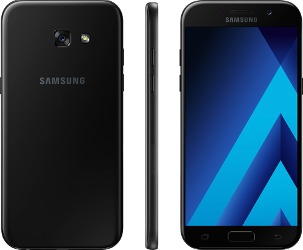

ŽAIDIMO „Drauskis su JUNO“ TAISYKLĖS
Žaidimo esmė
Žaidimas „Drauskis su JUNO“ (toliau – Žaidimas) organizuojamas ir vykdomas su tikslu motyvuoti Žaidimo dalyvius drausti savo
daiktus per naują JUNO aplikaciją. Žaidime dalyvauja visi dalyvio per žaidimo laikotarpį sudaryti draudimo polisai.
Kas gali dalyvauti žaidime?
-
Žaidime gali dalyvauti visi veiksnūs fiziniai asmenys, dalyvavimo Žaidime dieną sulaukę 18 metų.
-
Žaidime negali dalyvauti UAB „Draudimo idėjos“, ERGO Insurance SE Lietuvos filialo ir ERGO Life Insurance SE darbuotojai
bei jų šeimos nariai.
Kaip dalyvauti Žaidime?
- Atsisiųskite programėlę ir, ją įsijungę, ekrane pasirinkite prisiregistravimo būdą.
- Toliau sekite instrukcijomis ekrane: telefonu nufotografuokite draudžiamą daiktą ir jo pirkimo dokumentus, suveskite
reikiamus duomenis.
- Iškart išvysite draudimo kainos pasiūlymą. Jei kaina tinka, atlikite apmokėjimą, programėlėje suvedę savo debeto
arba kredito mokėjimo kortelės duomenis.
- Draudimo polisas programėlėje „JUNO“ Jūsų telefone atsiras ne vėliau kaip per 2 darbo dienas – kai tik ERGO draudimo
ekspertai įvykdys Jūsų užsakymą. Kai tai įvyks, Jūsų daiktai bus apdrausti, o Jūs automatiškai tampate žaidimo
dalyviu.
Žaidimo sąlygos
- Registruodamiesi dalyvauti Žaidime Dalyviai patvirtina, kad yra susipažinę su šiomis sąlygomis, joms neprieštarauja
ir sutinka jų laikytis.
- Dovana nekeičiama į pinigus ar kitas vertybes.
- Žaidimo organizatorius pasilieka teisę savo nuožiūra akciją sustabdyti arba keisti akcijos sąlygas.
- Žaidime dalyvauja visi dalyvio per žaidimo laikotarpį sudaryti draudimo polisai, tačiau apdovanojamas tik vienas
laimingas galiojantis draudimo polisas.
- Registruodamasis dalyvauti Žaidime asmuo sutinka, kad jo pateikti duomenys bus Organizatoriaus tvarkomi tiesioginės
rinkodaros bei Žaidimo organizavimo ir vykdymo tikslais.
- Žaidimo laimėtojas negali nutraukti sudarytu draudimo polisų ankščiau nei tai numatyta pačiame polise. Nutraukus
draudimo polisą ankščiau laiko
Dovana
-
Pirmos vietos laimėtojui – išmanusis telefonas Samsung A5 (2017 metų modelis)

Antros ir trečios vietos laimėtojui – pilnai kompensuojamas sudaryto draudimo poliso metinis mokestis.
Dovanos steigėjas yra Organizatorius.
Žaidimo organizatorius
Žaidimą organizuoja ir vykdo UAB „Draudimo idėjos“, įm. k. 304408600, adresas Kalvarijų g. 300, LT-08318 Vilnius.
Žaidimo trukmė
Žaidimas vyksta nuo 2017-08-07 iki 2017-09-04 imtinai.